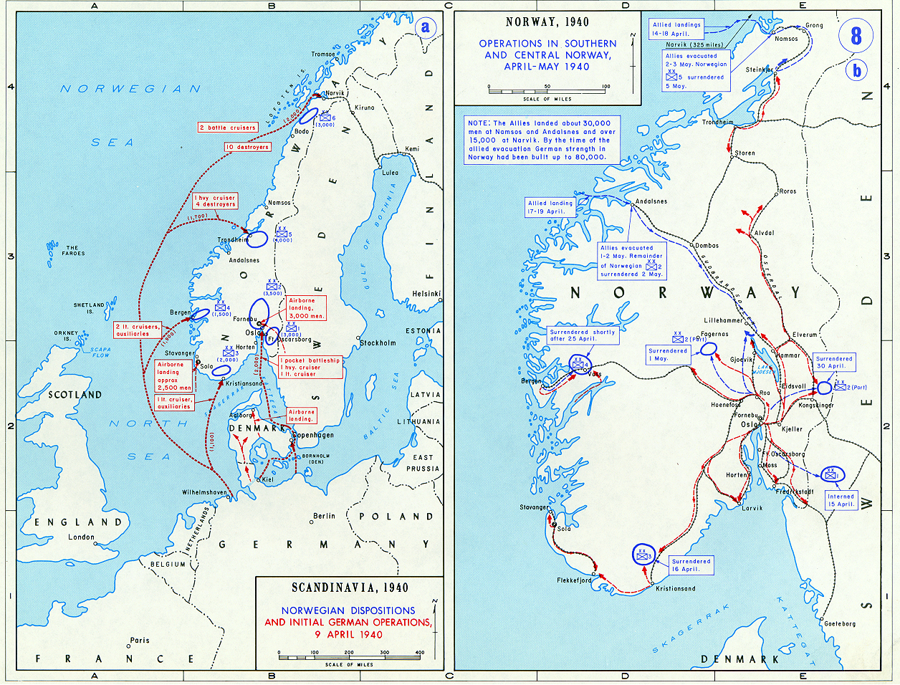

Operación Weserübung
Del alemán Unternehmen Weserübung ("Ejercicio del Weser"): la invasión simultánea de Dinamarca y Noruega por la Alemania nazi, la primera operación combinada de tierra, mar y aire de la historia.
Datos
| Fechas | 9 de abril – 10 de junio de 1940 (Dinamarca cayó en un solo día) |
|---|---|
| Lugar | Dinamarca y Noruega |
| Resultado | Victoria alemana; ocupación de Dinamarca y Noruega |
| Bando invasor | Alemania |
| Defensores | Noruega y Dinamarca, con apoyo de una fuerza expedicionaria aliada (Reino Unido, Francia y Polonia) |
| Comandantes alemanes | Nikolaus von Falkenhorst (mando terrestre), Erich Raeder (Kriegsmarine) |
| Comandantes defensores | Otto Ruge (Noruega); mando aliado en Narvik |
| Consecuencia directa | Alemania asegura el mineral de hierro sueco y bases navales y aéreas en el Atlántico Norte |
Bando invasor
Invasión (9 abr)
Países invadidos y aliados
Ocupada en un día
Resistió dos meses
Apoyo aliado
Apoyo aliado
Introducción
El 9 de abril de 1940, mientras el frente occidental permanecía en calma, Alemania lanzó una audaz operación para ocupar Dinamarca y Noruega en un solo golpe. Fue la primera gran operación de la guerra en combinar desembarcos navales, ataques aéreos y tropas aerotransportadas de forma coordinada.
Dinamarca, sin apenas capacidad de defensa, capituló el mismo día. Noruega, en cambio, resistió durante dos meses con la ayuda de una fuerza expedicionaria aliada, en una campaña que se libró sobre todo por mar y en el lejano puerto de Narvik.
Razones
- El mineral de hierro sueco: la industria de guerra alemana dependía del hierro de Suecia, que en invierno se embarcaba por el puerto noruego de Narvik. Controlar Noruega aseguraba esa ruta vital.
- Adelantarse a los aliados: Alemania sabía que británicos y franceses planeaban minar las aguas noruegas y, eventualmente, desembarcar. La invasión buscó ganarles la mano.
- Bases estratégicas: los puertos y aeródromos noruegos ofrecían posiciones avanzadas para la Kriegsmarine y la Luftwaffe en el Atlántico Norte, útiles contra el Reino Unido.
- Dinamarca, paso obligado: su territorio y sus aeródromos eran necesarios como puente aéreo y escala hacia Noruega.
Cuerpo (desarrollo)
Al amanecer del 9 de abril, fuerzas alemanas cruzaron la frontera danesa y desembarcaron en Copenhague. Ante la abrumadora superioridad y la amenaza de bombardeos sobre la capital, Dinamarca se rindió en pocas horas, tras una resistencia simbólica.
En Noruega, la Kriegsmarine desembarcó tropas simultáneamente en los principales puertos: Oslo, Kristiansand, Stavanger, Bergen, Trondheim y Narvik. La operación fue arriesgada: la marina alemana se adentró en aguas dominadas por la Royal Navy. En el fiordo de Oslo, las baterías costeras noruegas hundieron el crucero pesado Blücher, lo que retrasó la toma de la capital y permitió huir al rey y al gobierno, que siguieron la lucha desde el exilio.
Los aliados desembarcaron fuerzas en Namsos, Åndalsnes y Narvik para ayudar a los noruegos. En Narvik llegaron a recuperar la ciudad, pero la campaña quedó eclipsada por el desastre en Francia: con la invasión del oeste el 10 de mayo, los aliados necesitaron cada soldado y evacuaron Noruega a comienzos de junio. Noruega capituló el 10 de junio de 1940.

Mapa estratégico (Wikimedia Commons, U.S. Military Academy). A la izquierda, las disposiciones y los grupos navales alemanes que desembarcaron en cada puerto noruego y en Dinamarca; a la derecha, las operaciones y evacuaciones en el sur y centro de Noruega. Leyenda original en inglés.
Conclusión
Alemania logró sus objetivos: aseguró el suministro de hierro y obtuvo bases en el Atlántico Norte. Pero la victoria tuvo un coste elevado para la Kriegsmarine, que perdió buena parte de su flota de superficie (varios destructores y cruceros), lo que la debilitó de cara a futuras operaciones.
- Dinamarca y Noruega quedaron ocupadas durante el resto de la guerra.
- En Noruega se instauró un gobierno colaboracionista bajo Vidkun Quisling, cuyo nombre se convirtió en sinónimo de "traidor".
- El rey y el gobierno noruegos continuaron la resistencia desde Londres, junto a los Aliados.
- El fiasco de la campaña aliada precipitó en el Reino Unido la caída del gobierno de Chamberlain y la llegada de Winston Churchill al poder el 10 de mayo de 1940.
Curiosidades
- El origen de "quisling": Vidkun Quisling, que colaboró con los ocupantes, dio su apellido a una palabra que en varios idiomas significa "colaboracionista" o "traidor".
- El hundimiento del Blücher: el nuevo crucero pesado alemán fue hundido por cañones y torpedos de una fortaleza noruega del siglo XIX en el fiordo de Oslo, salvando al gobierno noruego.
- Primera operación combinada: Weserübung fue pionera en coordinar marina, aviación y tropas aerotransportadas a gran escala, un modelo que se estudiaría después.
- Caída de Chamberlain: el debate en el Parlamento británico por el fracaso en Noruega acabó derribando al primer ministro Neville Chamberlain justo el día en que Alemania invadió Francia.
Teorías
Debates e interpretaciones historiográficas, presentados como tales:
- ¿Guerra preventiva? Se debate hasta qué punto la invasión alemana se adelantó realmente a una intervención aliada inminente en Noruega. Ambos bandos planeaban actuar; Alemania golpeó primero.
- El precio para la Kriegsmarine: algunos historiadores sostienen que las graves pérdidas navales alemanas en Noruega contribuyeron a que más tarde no pudiera plantearse en serio la invasión del Reino Unido (Operación León Marino).
- ¿Se podía haber salvado Noruega? Se discute si una intervención aliada más rápida y decidida —sin el colapso simultáneo de Francia— habría permitido conservar al menos el norte de Noruega.